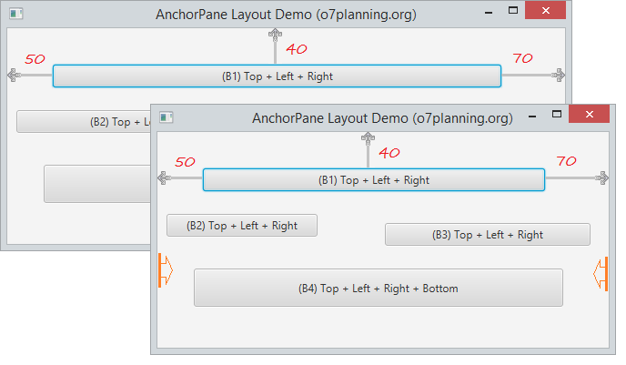

AnchorPane Layout
La clase AnchorPane es parte de JavaFX. AnchorPane permite que los bordes de los Nodes secundarios (subcomponentes) se anclen a un desplazamiento de los bordes del panel de anclaje. Si el panel de anclaje tiene un conjunto de borde y/o relleno, los desplazamientos se medirán desde el borde interior de esos recuadros.
AnchorPane hereda la clase Pane .
La siguiente imagen ilustra un subcomponente que se encuentra en un AnchorPane y está anclado en los lados izquierdo y derecho del AnchorPane. Cuando el AnchorPane cambia la longitud, la longitud de los subcomponentes también cambiará en consecuencia.

Los subcomponentes se pueden anclar en 4 lados de AnchorPane:
Métodos comúnmente utilizados:
- getBottomAnchor(Node c) Devuelve el ancla inferior del hijo.
- getLeftAnchor(Node c) Devuelve el ancla izquierda del hijo.
- getRightAnchor(Node c) Devuelve el ancla derecha del hijo.
- getTopAnchor(Node c) Devuelve el ancla superior del hijo.
- setBottomAnchor(Node c, Doble v) Establece el anclaje inferior del hijo.
- setLeftAnchor(Node c, Doble v) Establece el ancla izquierda del hijo.
- setRightAnchor(Node c, Doble v) Establece el ancla derecha del hijo.
- setTopAnchor(Node c, Doble v) Establece el ancla superior del hijo.
Y el código:
public class AnchorPaneDemo extends Application {
@Override
public void start(Stage primaryStage) throws Exception {
AnchorPane root = new AnchorPane();
Button button1 = new Button("(B1) Top + Left + Right");
Button button2 = new Button("(B2) Top + Left + Right");
Button button3 = new Button("(B3) Top + Left + Right");
Button button4 = new Button("(B4) Top + Left + Right + Bottom");
// (B1) Anchor to the Top + Left + Right
AnchorPane.setTopAnchor(button1, 40.0);
AnchorPane.setLeftAnchor(button1, 50.0);
AnchorPane.setRightAnchor(button1, 70.0);
// (B2) Anchor to the Top + Left + Right
AnchorPane.setTopAnchor(button2, 90.0);
AnchorPane.setLeftAnchor(button2, 10.0);
AnchorPane.setRightAnchor(button2, 320.0);
// (B3) Anchor to the Top + Left + Right
AnchorPane.setTopAnchor(button3, 100.0);
AnchorPane.setLeftAnchor(button3, 250.0);
AnchorPane.setRightAnchor(button3, 20.0);
// (B4) Anchor to the four sides of AnchorPane
AnchorPane.setTopAnchor(button4, 150.0);
AnchorPane.setLeftAnchor(button4, 40.0);
AnchorPane.setRightAnchor(button4, 50.0);
AnchorPane.setBottomAnchor(button4, 45.0);
// Add buttons to AnchorPane
root.getChildren().addAll(button1, button3, button2, button4);
Scene scene = new Scene(root, 550, 250);
primaryStage.setTitle("AnchorPane Layout Demo (o7planning.org)");
primaryStage.setScene(scene);
primaryStage.show();
}
public static void main(String[] args) {
launch(args);
}
}